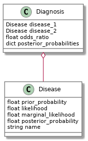

Joint Probability Functions
Table of Contents
Beginning
This is another re-working of an example from Bayes' Rule: A Tutorial Introduction to Bayesian Analysis. This looks at the case where we have more than one input and more than one possible output value. This assumes the possible outputs are discrete.
Imports
Python
from argparse import Namespace
from functools import partial
from math import isclose
from pathlib import Path
import random
PyPi
from bokeh.models import HoverTool
from expects import (
be,
be_true,
equal,
expect,
)
from hypothesis import given
from hypothesis.extra.pandas import columns, data_frames, range_indexes
from tabulate import tabulate
import holoviews
import pandas
My Stuff
from graeae.visualization import EmbedHoloview
The Plotting
The Holoviews Embedder
SLUG = "joint-probability-functions"
output = Path("../../files/posts/bayes/")/SLUG
holoviews.extension("bokeh")
Embed = partial(EmbedHoloview, folder_path = output)
The Plot Settings
Plot = Namespace(
width=800,
height=800,
)
Middle
Although Bayes Rule is often shown as being a binary hypothesis (you have a disease or you don't) with one data input (you tested positive for the disease), in most cases you will have more than one of each. Creating a table of counts/probabilities will make it easier to work with these hypotheses and data.
The Joint Probability Function
The Joint Probability Function is the distribution of input and output probabilities for each joint probability. To find the probabilities we need to take measurement counts. If we had two types of data and three hypotheses we could write out our counts in a table like this.
| Data | \(\theta_1\) | \(\theta_2\) | \(\theta_3\) | Sum |
|---|---|---|---|---|
| \(x_1\) | 2 | 0 | 1 | 3 |
| \(x_2\) | 1 | 4 | 2 | 7 |
| Sum | 3 | 4 | 3 | 10 |
The intersection of data and hypothesis is the count we got for our joint probability calculation. To get the actual joint probability we divide the numbers by the total count.
| Data | \(\theta_1\) | \(\theta_2\) | \(\theta_3\) | Sum |
|---|---|---|---|---|
| \(x_1\) | 0.2 | 0 | 0.1 | 0.3 |
| \(x_2\) | 0.1 | 0.4 | 0.2 | 0.7 |
| Sum | 0.3 | 0.4 | 0.3 | 1 |
This table represents the Joint Probability Distribution.
So if we want to look up the joint probability \(p(x_2, \theta_2)\) for \(x_2\) and \(\theta_2\) in the table we find the intersection of \(x_2\) and \(\theta_2\) in the table and find that it is 0.4. The summary values at the bottom are the marginal likelihood of the hypotheses - e.g. \(p(\theta_2) = 0.4\) and the summary values on the far right are the marginal likelihood of the data - e.g. \(p(x_2) = 0.7\).
Diseases And Symptoms
This next bit comes from the book, I'm just converting it to use pandas. I also changed the indexing to be zero-based, just because.
Suppose you have ten diseases and four symptoms and you count the number of patients that have a disease and a symptom. You can show the Joint Probability as a table.
joint = pandas.DataFrame(
[
[0,0,1,0,3,5,10,7,7,4],
[0,1,1,10,16,11,12,7,8,5],
[3,5,8,9,14,10,3,3,0,0],
[8,9,9,5,4,1,1,0,0,0],
],
columns=["theta_0", "theta_1", "theta_2", "theta_3", "theta_4",
"theta_5", "theta_6", "theta_7", "theta_8", "theta_9"],
index=["x_0", "x_1", "x_2", "x_3"],
)
assert joint.shape == (4, 10)
assert all(joint.T.sum() == pandas.Series([37, 71, 55, 37],
["x_0", "x_1", "x_2", "x_3"])), joint.T.sum()
assert joint.T.sum().sum() == 200
What is the joint probability that a patient has the symptom \(x_1\) and disease \(\theta_1\) [\(p(x_1, \theta_1)\)]?
To answer this we can look up the value in the row for \(x_1\) and the column for \(\theta_1\) and divide it by the total number of patients.
total = joint.sum().sum()
probabilities = joint/total
print(tabulate(probabilities, headers="keys", tablefmt="orgtbl"))
| theta_0 | theta_1 | theta_2 | theta_3 | theta_4 | theta_5 | theta_6 | theta_7 | theta_8 | theta_9 | |
|---|---|---|---|---|---|---|---|---|---|---|
| x_0 | 0 | 0 | 0.005 | 0 | 0.015 | 0.025 | 0.05 | 0.035 | 0.035 | 0.02 |
| x_1 | 0 | 0.005 | 0.005 | 0.05 | 0.08 | 0.055 | 0.06 | 0.035 | 0.04 | 0.025 |
| x_2 | 0.015 | 0.025 | 0.04 | 0.045 | 0.07 | 0.05 | 0.015 | 0.015 | 0 | 0 |
| x_3 | 0.04 | 0.045 | 0.045 | 0.025 | 0.02 | 0.005 | 0.005 | 0 | 0 | 0 |
intermediate = {
"p(x_1, theta_1)": probabilities.loc["x_1", "theta_1"]
}
print(f"p(x_1, theta_1) = {intermediate['p(x_1, theta_1)']}")
p(x_1, theta_1) = 0.005
What is the probability \(p(x_1)\) that a patient has symptoms \(x_1\)?
You can calculate this by counting all the patients that had symptom \(x_1\) (the sum of the row in the table across all thetas) and dividing by the total sample size.
intermediate["p(x_1)"] = probabilities.loc["x_1"].sum()
print(f"p(x_1) = {intermediate['p(x_1)']:.3f}")
p(x_1) = 0.355
What is the probability \(p(\theta_1)\) that a patient has the disease \(\theta_1\)?
This calculation is similar to calculating the probability of symptom \(x_1\) except instead of using a row total you use the column for \(\theta_1\).
intermediate["p(theta_1)"] = probabilities.theta_1.sum()
print(f"p(theta_1) = {intermediate['p(theta_1)']}")
p(theta_1) = 0.075
What is the conditional probability that a patient has the symptom \(x_1\) given that he has the disesase \(\theta_1\)?
This is the probability of patients with symptom \(x_1\) in the \(\theta_1\) column divided by the total probability in the \(\theta_1\) column.
intermediate["p(x_1|theta_1)"] = (probabilities.loc["x_1", "theta_1"]
/ probabilities["theta_1"].sum())
print(f"p(x_1|theta_1) = {intermediate['p(x_1|theta_1)']:.3f}")
p(x_1|theta_1) = 0.067
What is the conditional probability that a patent with disease \(\theta_1\) has symptom \(x_1\) (\(p(\theta_1| x_1)\))?
Here's where we get to apply Bayes' Rule. \[ p(\theta_1 | x_1) = \frac{p(x_1|\theta_1) p(\theta_1)}{p(x_1)} \]
intermediate["p(theta_1|x_1)"] = ((
intermediate["p(x_1|theta_1)"] * intermediate["p(theta_1)"])
/intermediate["p(x_1)"])
print(f"p(theta_1|x_1) = {intermediate['p(theta_1|x_1)']:.3f}")
p(theta_1|x_1) = 0.014
But, in fact, you can calculate this a little more directly using:
\[ p(\theta_1|x_1) = \frac{p(x_1, \theta_1)}{p(x_1)} \]
alternative = intermediate["p(x_1, theta_1)"]/intermediate["p(x_1)"]
print(f"Original: {intermediate['p(theta_1|x_1)']:.3}, Alternative: {alternative:.3}")
Original: 0.0141, Alternative: 0.0141
The Probability
This is a class to generalize what I did above.
class JointProbability:
"""A joint probability inquirer
Args:
counts: table of counts for joint probability
hypothesis: column with the hypothesis counts
data: row with the data counts
"""
def __init__(self, counts: pandas.DataFrame, hypothesis: str,
data: str) -> None:
self.counts = counts
self.hypothesis = hypothesis
self.data = data
self._sum_total = None
self._joint_probability = None
self._data_probability = None
self._hypothesis_probability = None
self._probability_of_data_given_hypothesis = None
self._probability_of_hypothesis_given_data = None
self._maximum_a_priori = None
self._probabilities = None
return
@property
def sum_total(self) -> int:
"""The total count of entries in the table"""
if self._sum_total is None:
self._sum_total = self.counts.sum().sum()
return self._sum_total
@property
def probabilities(self) -> pandas.DataFrame:
"""The counts converted to probabilities"""
if self._probabilities is None:
self._probabilities = self.counts/self.sum_total
return self._probabilities
@property
def joint_probability(self) -> float:
"""the joint probability of the data and hypothesis"""
if self._joint_probability is None:
self._joint_probability = self.probabilities.loc[self.data,
self.hypothesis]
return self._joint_probability
@property
def data_probability(self) -> float:
"""The probability of the data"""
if self._data_probability is None:
self._data_probability = self.probabilities.loc[self.data].sum()
return self._data_probability
@property
def hypothesis_probability(self) -> float:
"""The probability of the hypothesis"""
if self._hypothesis_probability is None:
self._hypothesis_probability = self.probabilities[
self.hypothesis].sum()
return self._hypothesis_probability
@property
def probability_of_data_given_hypothesis(self) -> float:
"""The probability of our data given the hypothesis"""
if self._probability_of_data_given_hypothesis is None:
self._probability_of_data_given_hypothesis = (
self.probabilities.loc[self.data, self.hypothesis]
/self.probabilities[self.hypothesis].sum()
)
return self._probability_of_data_given_hypothesis
@property
def probability_of_hypothesis_given_data(self) -> float:
"""The probability of our hypothesis given our data"""
if self._probability_of_hypothesis_given_data is None:
self._probability_of_hypothesis_given_data = (
self.joint_probability/self.data_probability)
return self._probability_of_hypothesis_given_data
@property
def maximum_a_priori(self) -> str:
"""The name of the most likely hypothesis"""
if self._maximum_a_priori is None:
self._maximum_a_priori = (
self.probabilities.loc[self.data]
/self.data_probability).idxmax()
return self._maximum_a_priori
Visualize the Maximum A-Priori
The Probabilities
The Maximum A-Priori (MAP) is the hypothesis that has the highest probability given the data.
I wrote the JointProbability class intending it to look at only one theta, but I'll use it again and ignore the theta argument.
table = JointProbability(joint, "theta_1", data="x_1")
height = int((Plot.height - 100)/3)
likelihood = (table.counts.loc["x_1"]/table.counts.sum()).reset_index().rename(columns={0: "p(x1|theta)"})
likelihood["theta"] = likelihood.index
likelihood_spikes = holoviews.Spikes(likelihood, vdims=["p(x1|theta)"], kdims=["theta"]).opts(
).opts(
padding=0,
height=height,
width=Plot.width,
tools=["hover"],
ylabel="Likelihood [p(x1|theta)]",
labelled=["y"],
xaxis="bare",
)
prior = (table.counts.sum()/table.counts.sum().sum()).reset_index().rename(columns={0: "p(theta)", "index": "theta"})
prior["theta"] = prior.index
prior_spikes = holoviews.Spikes(prior, vdims=["p(theta)"], kdims=["theta"]).opts(
height = height,
width = Plot.width,
tools=["hover"],
ylabel = "Prior [p(theta)]",
labelled=["y"],
xaxis="bare",
)
posterior = ((
(likelihood["p(x1|theta)"] * prior["p(theta)"])/table.data_probability)
.reset_index().rename(columns={"index": "theta",
0: "p(theta|x1)"}))
posterior_spikes = holoviews.Spikes(posterior, vdims=["p(theta|x1)"], kdims=["theta"]).opts(
height=height,
width=Plot.width,
tools=["hover"],
xticks = 10,
ylabel="Posterior [p(theta|x1)]",
xlabel="theta",
)
plot = (likelihood_spikes + prior_spikes + posterior_spikes).cols(1).opts(
holoviews.opts.Layout(
title="Disease Probabilities for x1"
),
holoviews.opts.Spikes(
color="blue",
line_width=4,
)
)
Embed(plot=plot, file_name="disease_probabilities")()
Looking at the plot you can see that \(\theta_9\) has the highest likelihood (it is the Maximum Likelihood Estimate or MLE), but \(\theta_4\) has the highest posterior probability and so if a person had symptom \(x_1\) we should probably diagnose that he or she has \(\theta_9\).
End
Before getting to the testing, it should be noted that the joint probability distribution is generally not available, which is why we need Bayes' Rule. I'm not sure I fully understand that point yet, so I'll just keep reading.
Tests
Test Our Example
These are tests using values from the example.
class TestProbability:
def __init__(self, table: pandas.DataFrame, data: str="x1", hypothesis: str="theta1"):
self.table = table
self.data = data
self.hypothesis = hypothesis
self._p_test = None
return
@property
def p_test(self) -> JointProbability:
"""The thing under test"""
if self._p_test is None:
self._p_test = JointProbability(self.table,
hypothesis=self.hypothesis,
data=self.data)
return self._p_test
def test_construction(self):
# given an instance of the probability
# when the table is retrieved
actual = self.p_test.counts
# then it is the expected
expect(actual).to(be(self.table))
# and the total is the expected
expect(self.p_test.sum_total).to(equal(200))
return
def test_joint_probability(self):
# given an instance of the probability
# when the p(x1, theta1) is retrieved
actual = self.p_test.joint_probability
# then it is the expected value
expect(isclose(actual, 0.005)).to(be_true)
return
def test_data_probabilitiy(self):
# Given an instance of the probability
# When p(x1) is retrieved
actual = self.p_test.data_probability
# Then it is the expected value
expect(isclose(actual, 0.355)).to(be_true)
return
def test_hypothesis_probability(self):
# Given an instance of the probability
# When p(theta1) is retrieved
actual = self.p_test.hypothesis_probability
# Then it is the expected value
expect(isclose(actual, 0.075)).to(be_true)
return
def test_probability_of_data_given_hypothesis(self):
# Given an instance of the probability
# When p(x1 | theta1) is retrieved
actual = self.p_test.probability_of_data_given_hypothesis
# Then it is the expected value
expect(isclose(actual, 0.067, abs_tol=1e-3)).to(be_true)
return
def test_probability_of_hypothesis_given_data(self):
# Given an instance of the probability
# When p(theta1 | x1) is retrieved
actual = self.p_test.probability_of_hypothesis_given_data
# Then it is the expected value
expect(isclose(actual, 0.014, abs_tol=1e-3)).to(be_true)
return
def test_maximum_a_priori(self):
# Given an instance of the probability
# When the MAP is retrieved
actual = self.p_test.maximum_a_priori
# Then it is the expected label
expect(actual).to(equal("theta4"))
return
def __call__(self):
tests = (thing for thing in dir(self) if thing.startswith("test_"))
for test in tests:
getattr(self, test)()
return
test = TestProbability(joint)
test()
Test Hypothesis
Now for some Pandas hypothesis testing.
class TestHypothesis:
@given(data_frames(columns=columns(10, dtype=int),
index=range_indexes(min_size=1)))
def test_total_sum(self, table) -> None:
# given a JointProbability instance
test = self.get_instance(table)
# when the sum_total is retrieved
actual = test.sum_total
# then it is the expected value
expect(actual).to(equal(table.sum().sum()))
return
@given(data_frames(columns=columns(10, dtype=int),
index=range_indexes(min_size=1)))
def test_joint_probability(self, table) -> None:
# given a JointProbability instance
test = self.get_instance(table)
# when the joint probability is retrieved
actual = test.joint_probability
# then it is the expected value
expected = test.table.loc[
tester.data, tester.hypothesis]/tester.sum_total
expect(actual).to(
equal(expected))
return
@given(data_frames(columns=columns(10, dtype=int),
index=range_indexes(min_size=1)))
def test_data_probabilitiy(table):
# given a JointProbability instance
test = self.get_instance(table)
# when the probability of the data is retrieved
test.data_probability
# then it is the expected value
expect(actual).to(
equal(test.table.loc[test.data].sum()/test.sum_total))
return
@given(data_frames(columns=columns(10, dtype=int),
index=range_indexes(min_size=1)))
def test_hypothesis_probabilitiy(table):
# Given a JointProbability instance
test = self.get_instance(table)
# When the probability of the hypothesis is retrieved
actual = test.hypothesis_probability
# Then it is the expected value
expect(actual).to(equal(
test.table[test.hypothesis].sum()/test.sum_total
))
return
@given(data_frames(columns=columns(10, dtype=int),
index=range_indexes(min_size=1)))
def test_probabilitiy_of_data_given_hypothesis(table):
# Given a JointProbability instance
test = self.get_instance(table)
# When p(data | hypothesis) is retrieved
actual = test.probability_of_data_given_hypothesis
# Then it is the expected data
expect(actual).to(equal(
test.joint_probability/test.hypothesis_probability
))
return
@given(data_frames(columns=columns(10, dtype=int),
index=range_indexes(min_size=1)))
def test_probabilitiy_of_hypothesis_given_data(table):
# Given a JointProbability instance
test = self.get_instance(table)
# When p(hypothesis | data) is retrieved
actual = test.probability_of_hypothesis_given_data
# Then it is the expected value
expect(actual).to(equal(
(test.probability_of_data_given_hypothesis
* test.probability_of_hypothesis)/test.probability_of_data
))
return
@given(data_frames(columns=columns(10, dtype=int),
index=range_indexes(min_size=1)))
def test_maximum_a_priori(table):
# Given a JointProbability instance
test = self.get_instance(table)
# When the MAP is retrieved
actual = test.maximum_a_priori
# Then it is the expected value
best_column = None
best_so_far = 0
for column in test.table.columns:
probability = test.probabilities[
test.data, test.hypothesis]/test.probability_of_data
if probability > best_column:
best_column = column
expect(actual).to(equal(best_column))
return
def get_instance(self, table) -> JointProbability:
data = table.sample().index
hypothesis = random.sample(list(table.columns), 1)[0]
return JointProbability(table, data=data, hypothesis=hypothesis)
def __call__(self) -> None:
self.test_total_sum()
return
test_hypothesis = TestHypothesis()
test_hypothesis()
Source
- Stone JV. Bayes’ rule: a tutorial introduction to Bayesian analysis. First edition, third printing [with corrections]. Sheffield: Sebtel Press; 2014. 170 p.
The Pox Probabilities
Table of Contents
Beginning
This is a look at calculating which is more likely for a patient with spots on his face - chicken pox or measles. It's an example adapted from the book Bayes' Rule (see below).
Imports
Python
from argparse import Namespace
from math import isclose
import sys
PyPi
from hypothesis import given
from hypothesis.strategies import floats, text
from expects import (
be,
be_true,
equal,
expect,
raise_error,
)
Constants
Since I'm multiplying floats the numbers can't be too small or python will interpret their products as zero. This is mostly a problem for the hypothesis testing.
SMALLEST = 1e-5
Middle
The Classes

The Disease
The Disease knows its own probabilities and name and whether it is more likely than another disease or not.
class Disease:
"""something to hold disease probabilities
Args:
name: identifier for the disease
prior_probabilty: probability of having this disease
likelihood: likelihood of symptoms given this disease
marginal_likelihood: probability of having the symptoms
"""
def __init__(self, name: str, prior_probability: float, likelihood: float,
marginal_likelihood: float) -> None:
self.name = name
self.prior_probability = prior_probability
self.likelihood = likelihood
self.marginal_likelihood = marginal_likelihood
self._likelihood_times_prior = None
self._posterior_probability = None
self.check_rep()
return
@property
def likelihood_times_prior(self) -> float:
"""The product of the likelihood and prior"""
if self._likelihood_times_prior is None:
self._likelihood_times_prior = (self.likelihood
* self.prior_probability)
return self._likelihood_times_prior
@property
def posterior_probability(self) -> float:
"""The posterior_probability of having the disease"""
if self._posterior_probability is None:
self._posterior_probability = (
self.likelihood_times_prior
/self.marginal_likelihood)
return self._posterior_probability
def check_rep(self) -> None:
"""Checks that there are no zero values
"""
assert self.marginal_likelihood > 0,\
f"({self.name}) Marginal Likelihood: {self.marginal_likelihood}"
assert self.prior_probability > 0,\
f"({self.name}) Prior Probability: {self.prior_probability}"
assert self.likelihood > 0,\
f"({self.name}) Likelihood: {self.likelihood}"
assert self.likelihood * self.prior_probability > 0
return
def __str__(self) -> str:
return (f"{self.name}, Posterior Probability:"
f" {self.posterior_probability:.3f}")
def __gt__(self, other: Disease) -> bool:
"""Checks if this is more likely than other"""
return self.posterior_probability > other.posterior_probability
def __truediv__(self, other: Disease) -> float:
"""divides posterior probabilities"""
return self.likelihood_times_prior/other.likelihood_times_prior
The Diagnosis
The diagnosis holds two diseases and decides which is more likely.
class Diagnosis:
"""A class to determine the more probable disease
Args:
disease_1: the first disease to consider
disease_2: the second disesase to consider
"""
def __init__(self, disease_1: Disease, disease_2: Disease) -> None:
self.disease_1 = disease_1
self.disease_2 = disease_2
self._diseases = None
self._diagnosis = None
self._most_likely = None
self._likeliest_posterior_ratio = None
return
@property
def diseases(self) -> dict:
"""The disease dictionary"""
if self._diseases is None:
self._diseases = {
self.disease_1.name: self.disease_1,
self.disease_2.name: self.disease_2,
}
return self._diseases
@property
def most_likely(self) -> Disease:
"""Gets the most likely disease"""
if self._most_likely is None:
self._most_likely = max(self.diseases.values())
return self._most_likely
@property
def likeliest_posterior_ratio(self) -> float:
"""Gets the ratio of the most-likely probability to least-likely"""
if self._likeliest_posterior_ratio is None:
most, least = self.most_likely, min(self.diseases.values())
self._likeliest_posterior_ratio = (most.likelihood_times_prior
/least.likelihood_times_prior)
return self._likeliest_posterior_ratio
def __getitem__(self, name: str) -> Disease:
"""Gets the disease by name
Raises:
KeyError: name not one of the diseases
"""
return self.diseases[name]
def __str__(self) -> str:
return (f"Disease 1: {self.disease_1}\n"
f"Disease 2: {self.disease_2}\n"
f"Most Likely: {self.most_likely.name}, Posterior Ratio:"
f" {self.likeliest_posterior_ratio:,.3f}")
Probabilities
Spots
The spots are the symptom, and the probability is the number of people in the population with spots (for any reason) divided by the total population.
Spots = Namespace(
probability=0.081
)
Measles
These are the probabililities for measles so we can use Bayes' Theorem. \[ p(measles| spots) = \frac{p(spots|measles)p(measles)}{p(spots)} \]
Measles = Namespace(
probability=2.9e-06,
probability_of_spots_given_measles=0.9,
probability_of_spots=Spots.probability,
name="Measles",
)
The probability is an estimate of the fraction of the population that gets measles in the United States per year. This turns really small, even though 2019 had the most cases in a decade (981).
Chicken Pox
And here's the probabilities and equation for chicken pox.
\[ p(chicken pox|spots) = \frac{p(spots|chicken pox)p(chicken pox)}{p(spots)} \]
ChickenPox = Namespace(
probability = 0.001,
probability_of_spots_given_chickenpox = 0.8,
probability_of_spots = Spots.probability,
name = "Chicken Pox"
)
I don't really know the probability that you'll get spots given each disease. Now that we have vaccines for both of them, though, they appear to be quite rare.
Diseases
I was re-using the disease instances, but I'm changing the definitions as I go, so I need to create them everytime a test gets run and this next bit is to help with that.
class Poxes:
def __init__(self, probability_of_spots=0.081) -> None:
self._measles = None
self._chicken_pox = None
self.probability_of_spots = probability_of_spots
self._diagnosis = None
return
@property
def measles(self) -> Disease:
"""Disease with measles probabilities"""
if self._measles is None:
self._measles = Disease(
prior_probability=Measles.probability,
likelihood=Measles.probability_of_spots_given_measles,
marginal_likelihood=self.probability_of_spots,
name=Measles.name)
return self._measles
@property
def chicken_pox(self) -> Disease:
"""Disease with chicken-pox probabilities"""
if self._chicken_pox is None:
self._chicken_pox = Disease(
prior_probability = ChickenPox.probability,
likelihood = ChickenPox.probability_of_spots_given_chickenpox,
marginal_likelihood = self.probability_of_spots,
name = ChickenPox.name,
)
return self._chicken_pox
@property
def diagnosis(self) -> Diagnosis:
"""Diagnosis for chicken pox and smallpox"""
if self._diagnosis is None:
self._diagnosis = Diagnosis(
self.measles,
self.chicken_pox,
)
return self._diagnosis
End
Testing
The Disease
Measles
# Given a disease object
def test_measles():
expected = Namespace(
prior=Measles.probability,
likelihood=Measles.probability_of_spots_given_measles,
marginal_likelihood = Measles.probability_of_spots,
name = Measles.name,
likelihood_times_prior = 2.61e-06,
posterior = 3.222e-05
)
disease = Disease(prior_probability=expected.prior,
likelihood=expected.likelihood,
marginal_likelihood=expected.marginal_likelihood,
name=expected.name)
# When its prior probability is checked
prior = disease.prior_probability
# And its likelihood is checked
likelihood = disease.likelihood
# And its marginal likelihood is checked
marginal_likelihood = disease.marginal_likelihood
# And its name is checked
name = disease.name
# And the likelihood times the prior is checked
likelihood_times_prior = disease.likelihood_times_prior
# And its posterior is checked
posterior = disease.posterior_probability
# Then it has the expected values
expect(prior).to(equal(expected.prior))
expect(likelihood).to(equal(expected.likelihood))
expect(marginal_likelihood).to(equal(expected.marginal_likelihood))
expect(name).to(equal(expected.name))
expect(isclose(likelihood_times_prior, expected.likelihood_times_prior,
abs_tol=1e-4)).to(be_true)
expect(isclose(posterior, expected.posterior, abs_tol=1e-5)).to(be_true)
return
Any Disease
Since I'm re-using the Disease class I don't really need to re-test it (I think), but I just ran across Hypothesis and want to try it out, so I'll make a generic version.
@given(floats(min_value=SMALLEST, max_value=1),
floats(SMALLEST, 1),
floats(SMALLEST, 1),
text(min_size=1))
def test_disease(prior, likelihood, marginal, name):
expected = (prior * likelihood)/marginal
# Given a disease
disease = Disease(prior_probability=prior,
likelihood=likelihood,
marginal_likelihood=marginal,
name=name)
# when the posterior is retrieved
actual = disease.posterior_probability
# then it is close enough
expect(isclose(actual, expected, abs_tol=1e-3)).to(be_true)
return
This turned out to show that I wasn't checking division by zero cases, so I guess it is good to do more testing.
The Diagnosis
Blocking Infinite Probabilities
Bayes' Rule has divisions in it (either calculating the posterior probability or posterior ratio) so I'm going to block letting the prior probability or marginal probability be zero by raising an exception.
Zero Marginal Likelihood
This means the probability of the data is zero (no one has spots as a symptom of disease).
def test_zero_marginal_likelihood():
# Given a disease with zero marginal likelihood
def bad_call():
disease_1 = Disease(prior_probability=0.5,
likelihood=0.5,
marginal_likelihood=0,
name="bad diseases")
return
# When the disease is created
# Then it raises an exception
expect(bad_call).to(raise_error(AssertionError))
return
Zero Prior Probability
This means the probability of the hypothesis is (was) zero - no one has this disease.
def test_zero_prior():
# Given a disease with zero prior probability
def bad_call():
disease_1 = Disease(prior_probability=0,
likelihood=0.5,
marginal_likelihood=0.5,
name="bad diseases")
return
# When the disease is created
# Then it raises an exception
expect(bad_call).to(raise_error(AssertionError))
return
Zero Likelihood
This means the probability of the data given the hypothesis is zero no - one with this disease has these symptoms.
def test_zero_likelihood():
# Given a disease with zero likelihood
def bad_call():
disease_1 = Disease(prior_probability=0.5,
likelihood=0,
marginal_likelihood=0.5,
name="bad diseases")
return
# When the disease is created
# Then it raises an exception
expect(bad_call).to(raise_error(AssertionError))
return
Getting Diseases Back
The Diagnosis maintains the diseases both as attributes and in a dictionary which lets you retrieve them back out.
def test_measles_retrieval():
# Given a Diagnosis with chicken pox and small pox
diseases = Poxes()
diagnosis = diseases.diagnosis
# When the measles is retrieved
actual = diagnosis[diseases.measles.name]
# Then it has the correct posterior probability
expect(actual).to(be(diseases.measles))
return
Finding the Most Likely Disease
The diagnosis should also decide which one is the more likely disease.
def test_measles_or_chicken_pox():
diseases = Poxes()
# Given a diagnosis with measles and chicken_pox
diagnosis = diseases.diagnosis
# When the best-guess is retrieved
guess = diagnosis.most_likely
# Then it is the chicken_pox
expect(guess).to(be(diseases.chicken_pox))
return
Now generalize it with hypothesis.
@given(floats(SMALLEST, 1), floats(SMALLEST, 1), floats(SMALLEST, 1),
floats(SMALLEST, 1), floats(SMALLEST, 1), floats(SMALLEST, 1))
def test_best_guess(prior_1, likelihood_1, marginal_1,
prior_2, likelihood_2, marginal_2):
# Given a Diagnostic with two diseases
disease_1 = Disease(prior_probability=prior_1,
likelihood=likelihood_1,
marginal_likelihood=marginal_1,
name="diseased_1")
disease_2 = Disease(prior_probability=prior_2,
likelihood=likelihood_2,
marginal_likelihood=marginal_2,
name="diseased_2")
diagnostic = Diagnosis(disease_1, disease_2)
# When the best-guess is retrieved
the_guess = diagnostic.most_likely
# Then it is the more likely one
the_one_we_expected = max((disease_1, disease_2))
expect(the_guess).to(be(the_one_we_expected))
return
The Posterior Ratio
Besides knowing the more likely outcome, we want to know how much more likely it is.
def test_pox_odds_ratio():
# Given a diagnostic with the poxes
diseases = Poxes()
diagnostic = diseases.diagnosis
# When odds ratio is retrieved
actual = diagnostic.likeliest_posterior_ratio
# then it is the ratio of the larger probability to the smaller
expected = (diseases.chicken_pox.posterior_probability/
diseases.measles.posterior_probability)
expect(isclose(actual, expected, abs_tol=1e-3)).to(be_true)
return
@given(floats(SMALLEST, 1), floats(SMALLEST, 1), floats(SMALLEST, 1),
text(min_size=1),
floats(SMALLEST, 1), floats(SMALLEST, 1), floats(SMALLEST, 1),
text(min_size=1))
def test_posterior_ratio(prior_1, likelihood_1, marginal_1, name_1,
prior_2, likelihood_2, marginal_2, name_2):
# Given a Diagnostic with two diseases
disease_1 = Disease(prior_probability=prior_1,
likelihood=likelihood_1,
marginal_likelihood=marginal_1,
name=name_1)
disease_2 = Disease(prior_probability=prior_2,
likelihood=likelihood_2,
marginal_likelihood=marginal_2,
name=name_2)
diagnostic = Diagnosis(disease_1, disease_2)
# When the posterior-ratio is retrieved
the_ratio = diagnostic.likeliest_posterior_ratio
# Then it's the expected ratio
likeliest, least = max((disease_1, disease_2)), min((disease_1, disease_2))
expected = likeliest/least
expect(isclose(the_ratio, expected, abs_tol=1e-3)).to(be_true)
return
Run them
test_measles()
test_disease()
test_zero_marginal_likelihood()
test_zero_prior()
test_zero_likelihood()
test_measles_retrieval()
test_measles_or_chicken_pox()
test_best_guess()
test_pox_odds_ratio()
test_posterior_ratio()
Inspecting
While the tests sort of give us a decent sense that things are working, let's take a look at the actual numbers.
print(str(Poxes().diagnosis))
Disease 1: Measles, Posterior Probability: 0.000 Disease 2: Chicken Pox, Posterior Probability: 0.988 Most Likely: Chicken Pox, Posterior Ratio: 30,651.341
So Chicken Pox is about thirty-thousand times more likely to be the reason for the spots than Measles (unless you live in the Pacific Northwest, perhaps).
Source
- Stone JV. Bayes’ rule: a tutorial introduction to Bayesian analysis. First edition, third printing [with corrections]. Sheffield: Sebtel Press; 2014. 170 p.
A first post
In the Beginning
This is a test of the nikola setup.